| 日付 | 2018年5月4日（金） - 2018年5月6日（日） | ||||
|---|---|---|---|---|---|
| 山域 | 中央アルプス | ||||
| メンバー | 家族（妻、長女・7歳、長男・4歳） | ||||
| 山行形態 | 子連れ2泊3日ホテル泊 | ||||
| アクセス | 車 | ||||
| ルート (Map2) |
|
3日目
昨日は早立ちしたが、本日はゆっくり起床。ホテルの部屋から木曽川を望む。
このホテルは今回の旅行の観光スポットからは少々離れていたが、
人気の宿だけあって良い宿だった。
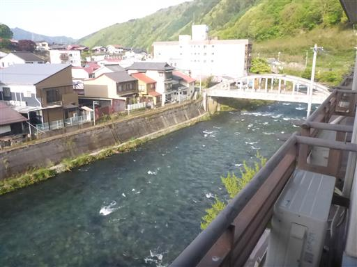
本日は初日に訪れる予定だった田立の滝を訪れる。
細い林道を抜けて駐車場に到着する。
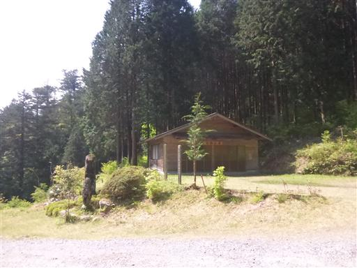
滝見学の遊歩道という事で、登山靴ではなくスニーカーで歩き始める。
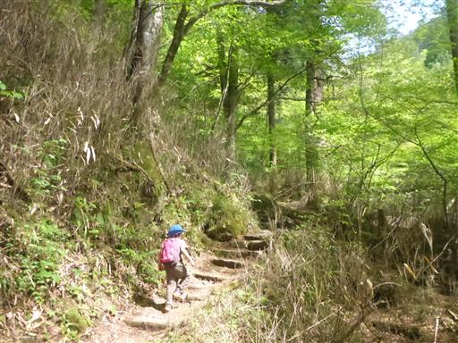
途中で河原に下りられるところがあったので、少々川遊び。
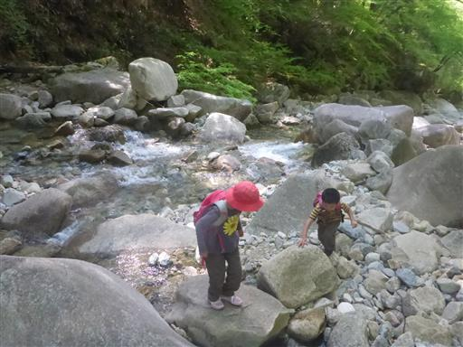
遊歩道はところどころ小さな沢を横切る。
大した流れではないのだが、登山靴ではないため気を使う。
やはり登山靴にすればよかった。
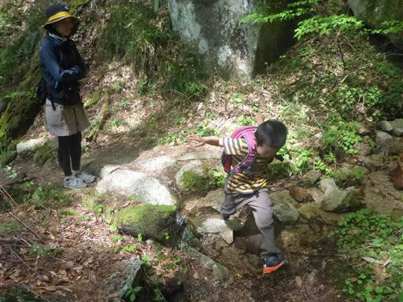
この界隈は大木が多く、名前が付けられた木があちらこちらにある。
こちらは「もみたろう」。
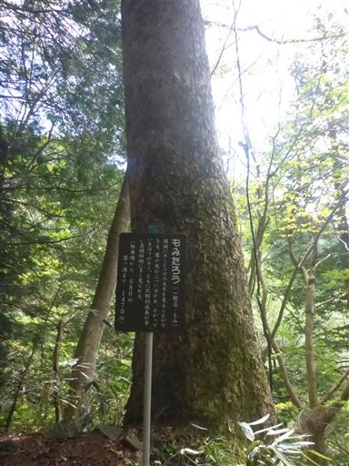
「さわら大師」。
他にも「ひのきイチロー」や「まきチャン」など謎のネーミングが続く。
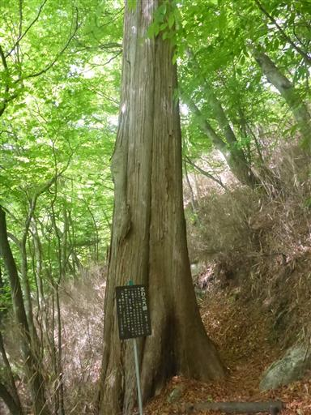
不動岩の展望ポイント。本日の目的地はあの岩の天辺だ。
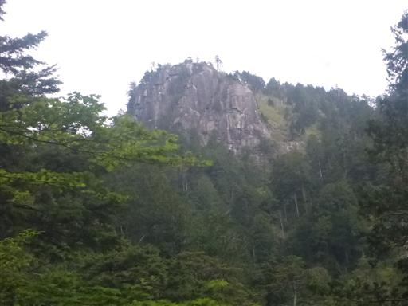
木橋。ちょっと古い橋で右側は崖のため歩くのが少々怖い。
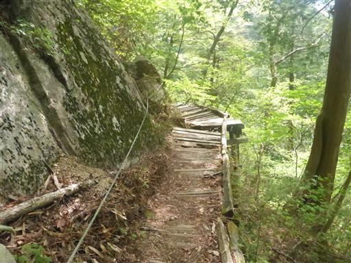
螺旋滝との分岐点。
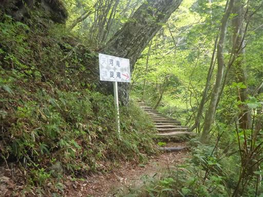
急な斜面を下りきると螺旋滝に到着する。
特徴的な形の滝で、迫力もそこそこある。
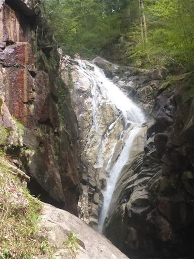
分岐点まで戻って先に進む。
吊橋はボロいからか3人以上で渡らないように注意書きがある。
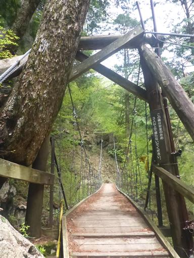
眼下に洗心滝が見える。最初は川から離れてずっと樹林帯歩きだったが、
滝が連続するようになってくる。
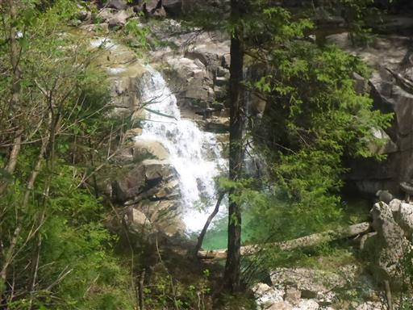
こちらも結構ボロい橋だ。

霧ヶ滝に到着。落差が大きく迫力のある滝だ。
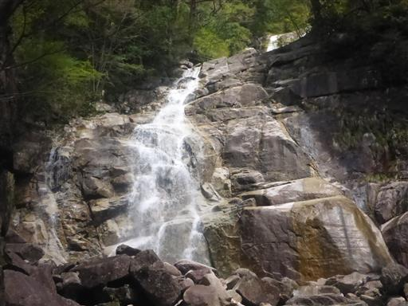
さらに先に進む。古くて壊れた階段の上に新しい階段が設置されている。
かなりの急斜面だ。
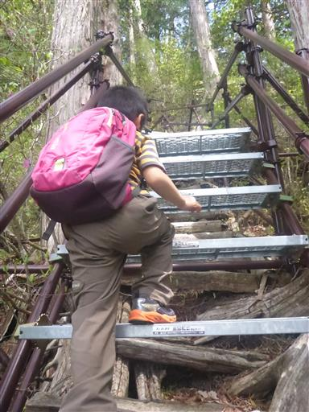
新しい吊橋を渡る。こちらの吊橋は頑丈そうだ。
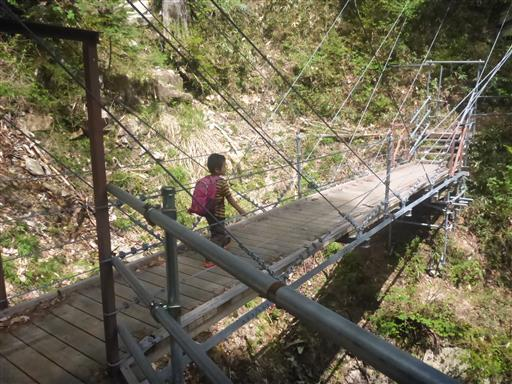
隣には今にも崩壊しそうな古い橋が架かっている。
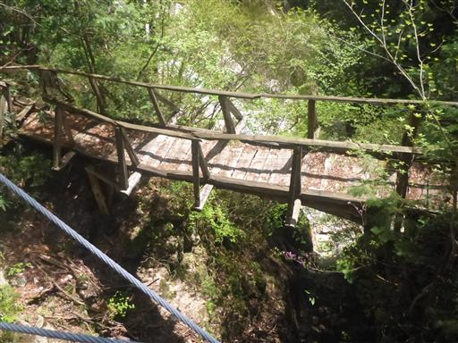
階段を登りきると天河滝が見えてくる。
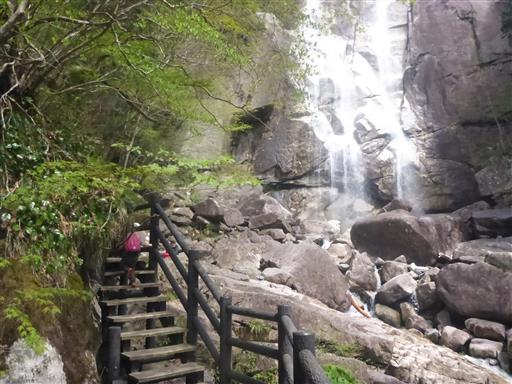
田立の滝とはこの界隈の滝群の総称で、主瀑はこの天河滝。
落差40mの立派な滝だ。これほど大きな滝が連続して現れる場所を他に知らない。
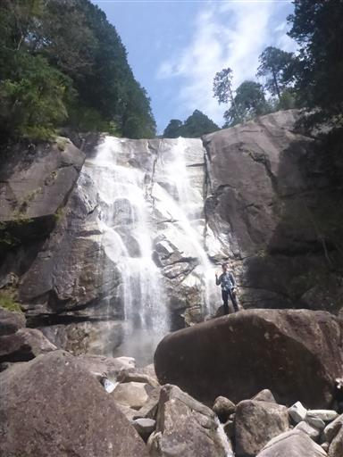
滝壺まで近づくことができる。
水量はさほど多くないため水しぶきは少ない。
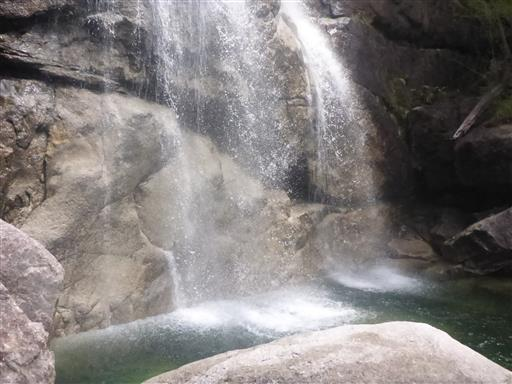
滝の周囲は開けているため、ここでおやつ休憩をとることにする。
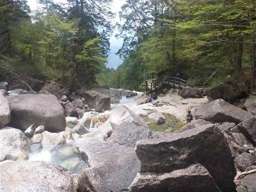
メインの天河滝を見学後もさらに先に進む。
足元注意の標識通り、かなり危なっかしい道だ。
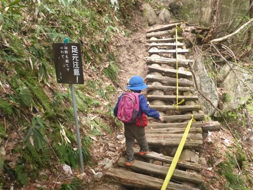
標高を上げていくと、天河滝の落ち口が見えてくる。
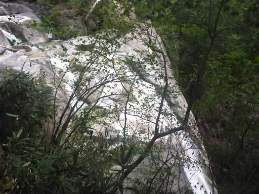
息子は滝が気に入ったようで、娘が先に行っても足を止めて眺め続けている。
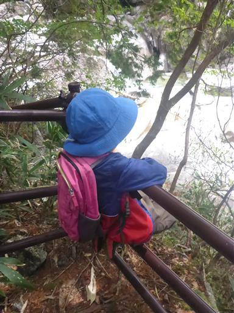
続いて不動滝に到着。こちらは水の流れが美しい滝だ。
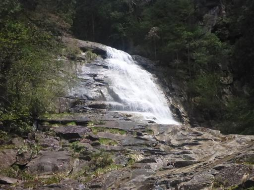
ちどり桟橋。じぐざぐに付けられた木橋を登って行く。
木と木の間隔が開いているので息子は苦戦だ。

龍ヶ瀬に到着。岩の上を流れ下る水が美しい。
この辺りにはアカヤシオの花がチラホラと咲いている。
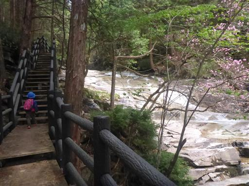
最上流部分まで来る。
まだ先に道があるように見えるが通行止になっている。
ここからは川と離れて不動岩への登りとなる。
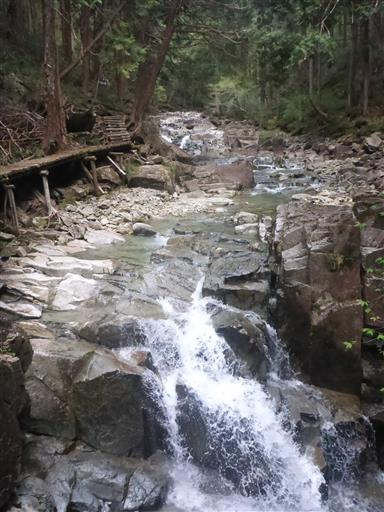
ひと登りで不動岩展望台に到着する。すぐ先は断崖だ。
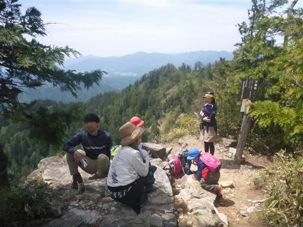
ここからは素晴らしい眺めが広がる。
天気は下り坂で若干霞んでいるのが残念だ。
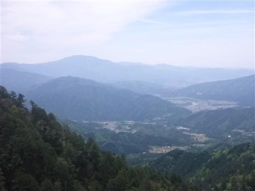
崖の縁にイワカガミの花が咲いている。
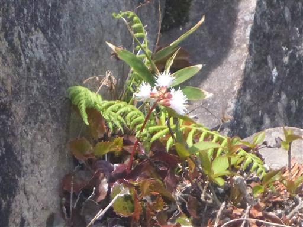
下山後、阿寺渓谷にでも行こうかと考えていたが、
時間が押しているため、替わりに帰りの途中で川遊びすることにする。
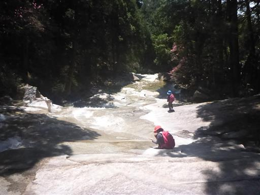
川に入るためまず靴を脱ぐ。
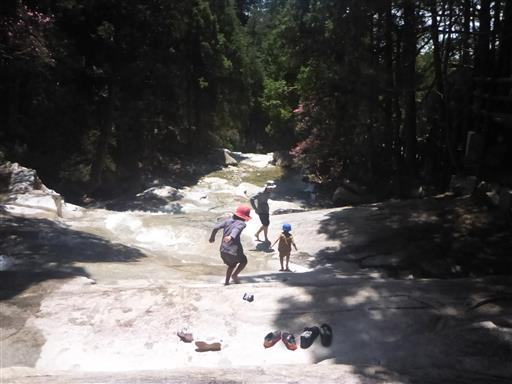
川に入ってみる。水がものすごく冷たくて、足だけでも10秒が限界だ。
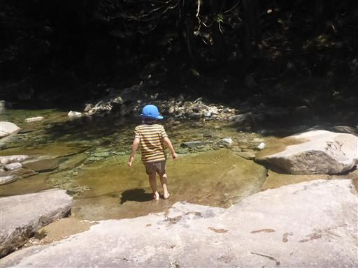
緩やかな傾斜の一枚岩で、上に行ったり下に行ったりして遊びまわる。
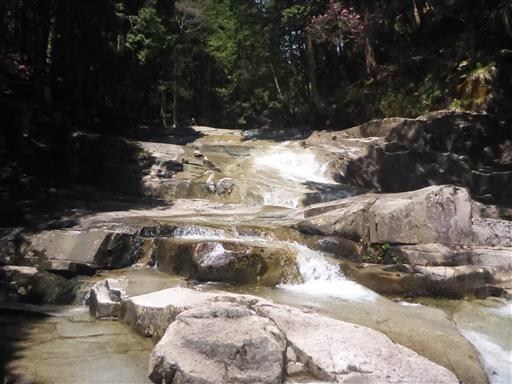
しかし、その先は断崖絶壁の滝なので気を付ける必要がある。
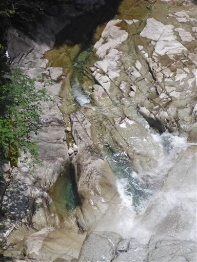
裸足でどこを歩いても靴を濡らす心配が無いため、息子の行動はだんだん大胆になってくる。
砂利の上を歩いて痛くないのだろうか？

結局ズボンを濡らしてしまう。
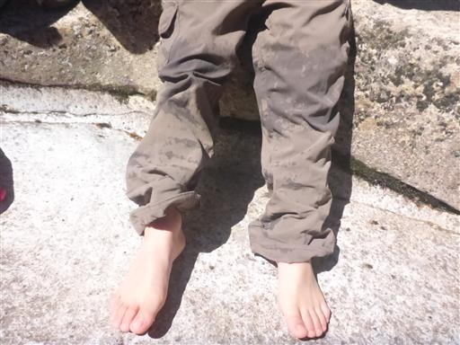
川遊びを終えたら元来た道を戻って駐車場まで歩く。
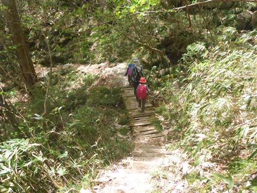
思った以上に田立の滝に時間がかかったため、昼食は14時になってしまう。
道の駅賤母にある「石がまピザ アスカ亭」で美味しいピザを食べる。
こんな場所に石窯を置いてピザを焼くなんて驚きだ。
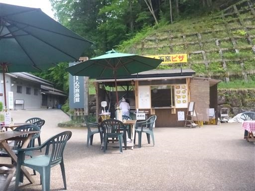
こちらは有名なフランクフルト屋。食後に一本買って食べてみる。
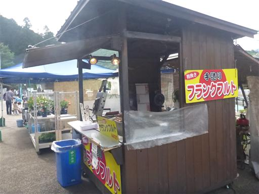
ここの道の駅は妻籠宿と馬籠宿が近いため、それを意識した造りになっている。
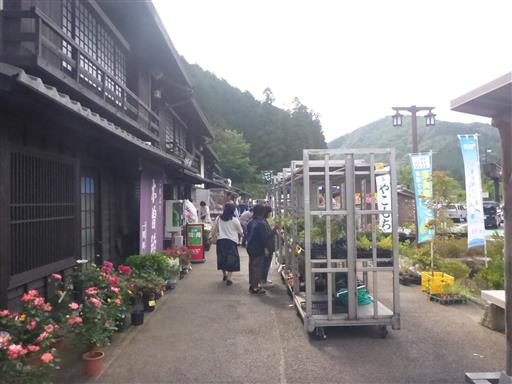
子供たちは池で遊んでいる。これで今回の旅行はお終い。帰宅の途に就く。
短い旅行だったが、変化に富む観光地を訪れることができ、充実した時間を過ごせた。
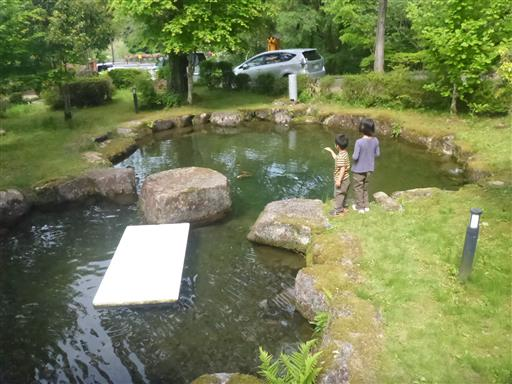